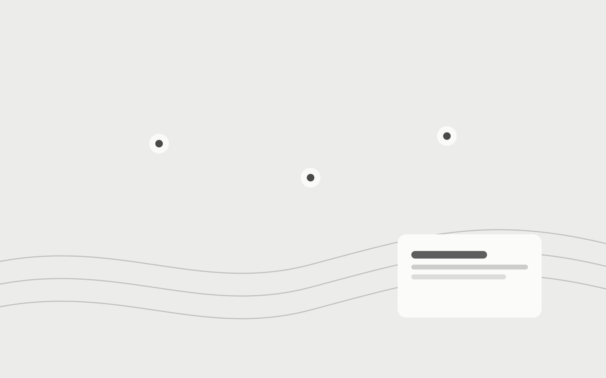

Vipps · Large Customers
Designing payment flows around users’ mental models
At Vipps, I worked as Service Design Lead and Research Lead in Commerce Platform / Large Customers.

Service Design Lead / Research Lead
Research revealed a mismatch between the product’s transaction model and users’ mental model of paying with Vipps.
The product treated payments to people and payments to businesses as different transaction types. Many users understood both through the same basic concept: paying with Vipps.
That mismatch became important when different fees or conditions applied.
The product model and the mental model did not match
From the product’s perspective, paying a person and paying a business were different contexts.
Users did not necessarily make that distinction before starting a payment. Their mental model was simpler: they were paying with Vipps.
The mismatch became visible when the product behaved differently from what they expected.
Fees made this particularly clear. If the transaction context had not been understood, the fee could feel arbitrary even when the product was behaving exactly as designed.

The fee was a symptom, not the source
An obvious response would have been to improve the explanation around the fee.
Research showed that the problem started earlier.
By the time the fee appeared, users had already formed an understanding of the transaction. If that mental model was wrong, better copy at the end of the flow would only address the consequence.
That changed the framing of the problem.
Instead of asking:
How do we explain this fee?
we asked:
How do we establish the payment context before the fee becomes relevant?

Establishing the context earlier
The design work affected the flow, information hierarchy and communication.
The transaction type needed to become clear while users were still forming an understanding of what they were doing.
This meant making the payment context legible through the interaction itself, rather than relying on an explanation once different conditions appeared.

The fee was where the misunderstanding became visible. The payment context was where the problem started.
Testing whether the mental model had changed
Completion alone was not a useful measure of whether the problem had been solved.
We needed to know whether users understood the transaction differently.
For one key misconception related to online-shopping fees, the proportion of users who misunderstood the situation fell from approximately 80% to 27%.

That gave us evidence that changing how the payment context was presented had changed users’ understanding of the transaction.
Research changed the framing
The initial problem appeared to be fee confusion.
Research showed that the more important issue was the mismatch between the product’s transaction model and users’ mental model.
That evidence changed the direction of the work.
Instead of optimising the explanation at the point of confusion, we changed how the transaction context was established earlier in the experience.
The interface changed because the framing of the problem changed first.